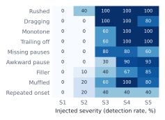
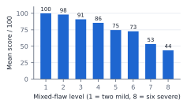
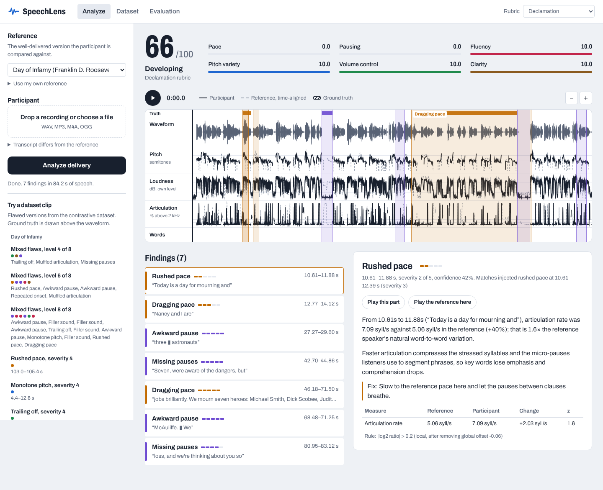

Contrastive speech analytics with temporal flaw grounding · Multimodal AI Hackathon 2026, Track C · Technical documentation
SpeechLens compares a participant's delivery of a text with a well-delivered reference reading of the same text. It force-aligns both readings word by word, measures how pace, pausing, pitch, loudness, articulation and fluency differ, marks each delivery flaw with start and end times, and explains it with the measured numbers and a fix. A rubric turns the findings into a reproducible 0–100 score. It runs on a CPU with no language model and gives byte-identical output on every run. We built the contrastive dataset it is trained and tested on, and every reported number is cross-validated.
Five celebrated public-domain speeches (US federal government works), audio and transcripts from the Miller Center, University of Virginia. A greedy CTC decode locates the speech inside each recording, skipping oaths and introductions, and an excerpt of about 75 s is cut at a sentence boundary.
| Speech | Len (s) | Words | Align conf. |
|---|---|---|---|
| Roosevelt, Day of Infamy (1941) | 110.5 | 158 | 0.91 |
| Kennedy, Inaugural (1961) | 79.1 | 131 | 0.94 |
| Johnson, We Shall Overcome (1965) | 88.9 | 120 | 0.95 |
| Reagan, Challenger (1986) | 77.2 | 197 | 0.92 |
| Obama, Inaugural (2009) | 81.4 | 126 | 0.94 |
Align conf. = mean CTC posterior of the transcript's characters over each word.
Each gold recording is cut at the midpoints of inter-word gaps and one span is edited with Praat PSOLA resynthesis, which changes timing and pitch while keeping the speaker's own voice. Because we make every edit, each label is exact to the sample: new word times are computed by integrating the same piecewise-linear duration tier Praat applies, and inserted material shifts later times exactly. Nine flaw types at five severities, from near-perfect (1) to egregious (5):
| Flaw | Edit | Severity 1 → 5 |
|---|---|---|
| Rushed / dragging | duration tier; words ×f, pauses ×f1.6 | f 0.88→0.55 / 1.12→1.62 |
| Monotone | pitch excursion around span median ×(1−a) | a 35 %→97 % |
| Trailing off | gain ramp over 60 % of span | −4→−18 dB |
| Missing pauses | punctuation pauses cut, centre kept | 60 %→4 % kept |
| Awkward pause | mid-phrase silence with the recording's own noise floor | 0.35→1.8 s |
| Filler (uh/um) | speaker's steadiest vowel lengthened by overlap-add, falling pitch, nasal tail for "um" | 0.28→0.65 s, 1–4× |
| Muffled articulation | 6th-order low-pass | 5 → 1.2 kHz |
| Repeated onset | word's first 150 ms repeated | 1→3× |
Per speech: 45 single-flaw clips, 8 mixed clips forming a gradient from two mild to six severe flaws, and 4 controls with no flaw (untouched, voice shifted +4 and −4 semitones, 12 dB quieter). All random choices are seeded from a CRC32 of the clip id, and Praat's own random generator is seeded per call, so a rebuild is bit-identical on any machine. Total: 285 synthetic clips.
Three team members each read three excerpts four times: a clean take A and three takes with flaws performed at positions fixed by a recording script (B pace, C voice, D fluency): 36 recordings, 90 scripted flaws. Labels come from force-aligning each take and mapping the scripted words to times. Each flawed take is compared with the same person's clean take, since a student's reading against President Kennedy's differs everywhere.
A manipulation check accepts a scripted flaw only if a fixed raw measurement over the scripted words, against take A, reaches the severity-1 injection level (e.g. duration factor ≤ 0.88 for rushed, pitch range ratio ≤ 0.65 for monotone). The measurements do not use the detector. 58 of 90 passed. Phone-recorder gain control erased most fades (2/9), and "mumbles" were usually whispered, which raises high-frequency energy instead of lowering it (2/9). Unperformed labels are excluded from scoring; findings that match them are neither rewarded nor penalised.
Files: data/library/<id>/{audio.wav, transcript.txt, alignment.json}, data/dataset/{clips,labels}/, manifest.json. Each label: type, severity, start, end (s), word span, edit parameters.
wav2vec2-base-960h (ONNX, CPU) outputs per-frame log-probabilities L[t,c] over 32 symbols at a 20 ms stride; long audio is processed in 20 s windows with 1 s context so results do not depend on length. Transcripts are normalized (numbers and years to words, "December 7" to "seventh", dashes split). An exact CTC Viterbi pass finds the single path spelling the transcript:
Word boundaries are then snapped to the 10 ms RMS envelope (−32 dB re. 95th percentile), extending CTC's spiky onsets to cover each word's decaying tail, so pauses are measured from real silence.
Speaker-agnostic normalization. Pitch is in semitones relative to each speaker's own median, and loudness in dB relative to the speaker's median speech level:
A deep and a high voice reading identically give the same contours; recording gain cancels. The controls test this directly: shifting the voice ±4 semitones or lowering it 12 dB produced 1 finding in 29 minutes.
Pairing. Words of the two readings are matched by transcript position (sequence alignment of normalized words), so a skipped word affects only itself.
Global vs local. For each contrast signal sj over word pairs (e.g. log2 of the rate ratio over a 3-word window), the median is the speaker's overall habit and is reported separately; the residual is where delivery departs from the reference, scored against the reference speaker's own word-to-word variability:
Runs of words past a threshold (one-word holes closed) become regions: rushed/dragging (|log2 rate ratio| > 0.20, ≥3 words, change spread across the words), monotone (pitch-range ratio < 0.68 over 5-word windows, octave errors removed), trailing off (> 3.5 dB below reference), muffled (mean log2 ratio of >2 kHz and >4 kHz energy < −0.75).
Disfluencies at word boundaries. A disfluency adds time at one spot; a slow passage adds it everywhere. Each boundary's added time is measured beyond the 75th percentile of the six neighbouring boundaries. A repeated onset is ≥2 short fragments before a word whose first fragment matches the word's own onset (MFCC cosine > 0.88 for one repetition). A filler is a held vowel (steady pitch ±0.5 st, calmest 30 % of spectral change) ≥140 ms longer than the reference holds there. An awkward pause is ≥0.3 s extra mid-phrase; at punctuation only ≥1.2 s counts, since a longer pause there is usually deliberate. Missing pauses means ≥2 reference pauses within 8 words cut below 40 %.
Conflict resolution. A short span deviation around a point disfluency is folded into it (the aligner absorbs an "uh" into the next word, which then looks slow); missing pauses inside a rushed span, and stretched pauses inside a dragging span, belong to that span.
Significance gates. Natural rereading drifts by about ±20 % in pace and hundreds of milliseconds in pauses. A per-type magnitude gate, fitted to maximise F1 on synthetic and human data (each weighted half), drops findings within that variation, e.g. rushed only below a duration factor of 0.73, filler only above 0.38 s.
Causal explanation. Each region fills a fixed template with its measurements: location and words, primary metric for reference vs participant with the relative change, z-score, the acoustic or perceptual rationale, and a fix. No language model is involved, so the same audio always gives the same sentence.
Six dimensions (pace, pausing, fluency, pitch variety, volume control, clarity) start at 10. A span flaw costs severity × (0.8 + 6 × share of words covered), a point flaw 0.7 × severity, a whole-reading habit 2.4 × severity. The overall score is 10 × the weighted mean of the dimensions; presets weight them for Declamation (pitch variety, pausing), Interpretive Reading (pitch variety ×1.5), Extemporaneous (fluency ×1.5) and Persuasive Oratory (volume ×1.4), with bands Championship ≥ 90, Strong ≥ 75, Developing ≥ 60.
Severity is read from each region's raw magnitude through a table fitted from data (median magnitude per true severity, monotone). On speeches held out of the fit, the estimate is off by 0.45 levels on average and within one level 94 % of the time (0.54 levels with the injection parameters as the table).
Every number runs the full pipeline on raw audio, alignment of the flawed recording included. A finding matches a label of the same type at temporal IoU ≥ 0.3, one to one. Thresholds and severity tables are fitted from data, so results are cross-validated: synthetic clips are scored with gates fitted without that speech (and without human takes of it); human takes with gates fitted without that recorder.
| Flaw | P | R | F1 | Human R |
|---|---|---|---|---|
| Rushed | 0.97 | 0.73 | 0.83 | 4/8 |
| Dragging | 0.88 | 0.52 | 0.66 | 5/5 |
| Monotone | 1.00 | 0.64 | 0.78 | 2/4 |
| Trailing off | 0.96 | 0.63 | 0.77 | 2/2 |
| Missing pauses | 1.00 | 0.51 | 0.68 | 4/8 |
| Awkward pause | 0.94 | 0.60 | 0.73 | 5/7 |
| Filler | 0.80 | 0.62 | 0.70 | 8/15 |
| Muffled | 1.00 | 0.52 | 0.69 | 0/2 |
| Repeated onset | 0.75 | 0.44 | 0.56 | 2/7 |
| All | 0.89 | 0.58 | 0.71 | 32/58 |
P/R/F1: synthetic, leave-one-speech-out, 499 labels. Human R: performed flaws found, leave-one-speaker-out. At tIoU ≥ 0.5 synthetic F1 is 0.64. Matched flaws: mean tIoU 0.75, median boundary error 156 ms.


On team recordings, 55 % of performed flaws are found (by recorder: F1 0.48, 0.26, 0.12, tracking how strongly each person acted the flaws). Measured precision is only 0.22, because any finding outside a scripted flaw counts as false, and people reading flaws on cue also slip unscripted. A blind listening audit tested this: a listener rated 30 snippets against the same words in the speaker's clean take, without knowing why each was picked. Unscripted findings were heard as worse delivery in 12 of 16 cases (95 % CI 50–90 %), scripted flaws in 6 of 7, and random spans with no finding in 0 of 7. Counting those as real puts precision near 0.80 (95 % range 0.61–0.92). The listener named the same problem as the detector in only 17 % of those cases: SpeechLens locates unscripted problems more reliably than it labels them. One listener from the team is an estimate, not a measurement.
A FastAPI backend serves a no-build web dashboard. It accepts audio (WAV, MP3, M4A, OGG) and transcripts, or a dataset clip, and shows the score, six dimension bars, a zoomable time-aligned overlay of pitch, loudness and articulation (reference warped onto the participant's timeline through paired word boundaries), ground truth when known, clickable flaw bands, and per-finding detail with the measurement table, the rule that fired, and A/B playback of the participant and the reference at the same words.

Reproducibility. CPU only; pinned dependencies; Docker image; reproduce.sh rebuilds the dataset and every number from the raw speeches; analyses are cached by content hash; a re-run in a fresh process gives byte-identical output (checked inside the evaluation). Unit tests cover the Viterbi, text normalization, injection labels and determinism.
Code, dataset and documentation: GitHub repository (README). Speech audio and transcripts: Miller Center, University of Virginia (public domain). Alignment model: facebook/wav2vec2-base-960h (Apache-2.0), ONNX export by Xenova. Praat via Parselmouth (GPL-3.0).